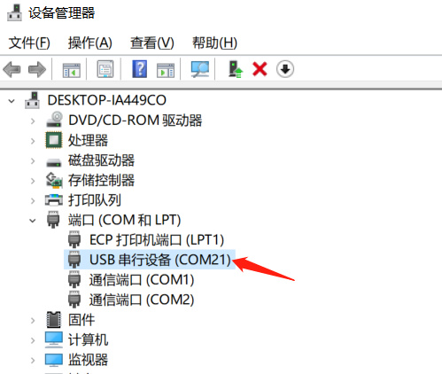

Micropython 固件下載與燒錄
在MicroPython官網可以找到支持ESP32S3芯片的固件 https://micropython.org/download/GENERIC_S3/
點擊連接進入頁面後即可在下方看到幾個固件的下載地址，選擇一個.bin 後綴的文件下載到本地即可。
注意固件名中標註的日期，離當前時間越近的功能越新。
可以用兩種工具來燒錄固件，樂鑫科技官方的FLASH下載工具或esptool ，二選其一即可。
設置固件下載模式
有兩種操作方法：
1.通過USB連接到電腦，按住BOOT鍵，再按一下RESET鍵並鬆開，最後鬆開BOOT鍵。
2.在斷開供電的條件下按住BOOT鍵，再通過USB連接到電腦，最後鬆開BOOT鍵。
由此可知，芯片是通過BOOT鍵所控制的GPIO0來選擇復位或重新上電時的啟動模式。
在設備管理器中確認COM接口，固件下載模式與普通模式下的com接口序號通常是不一樣的。

Windows FLASH下載工具
下載並解壓：FLASH下載工具下載地址
打開軟件並選擇芯片型號為ESP32S3,將下載模式設置為usb：

此時需要設置開發板為固件下載模式。
在芯片處於固件下載模式的條件下，在FLASH下載工具窗口中修改COM接口為對應的接口，此處為COM22。
添加MicroPython固件，對於ESP32-S3芯片要設置flash起始地址為 0x0000 。
先點擊ERASE按鈕清除flash上的數據，再點擊START燒寫固件到flash中。
燒錄完成後按一次RESET鍵，使開發板進入普通使用模式。
esptool
以Windows PowerShell的具體操作步驟為例。
使用以下命令安裝esptool：
pip install esptool
如果未來有需要，則可以使用以下命令升級esptool：
pip install -U esptool
通過命令或其他方法在PowerShell中進入固件所在的目錄。
可以在Windows文件夾窗口中以按住shift鍵再單擊右鍵的方式在此文件夾中打開PowerShell窗口。
此時需要設置開發板為固件下載模式，詳見上文。
通過以下命令清除flash，需要修改COM接口為對應的接口，此處為COM22。
python -m esptool --chip esp32s3 --port COM22 erase_flash
通過以下命令燒錄固件，需要修改固件文件名為當前對應需要燒錄的文件名。
python -m esptool --chip esp32s3 --port com22 --baud 460800 --before=default_reset --after=hard_reset write_flash -z 0x0 firmware_name.bin
如果是通過USB燒錄，完成後按一次RESET鍵復位，使開發板進入普通使用模式。
如果是通過UART燒錄，則會在完成後自動復位。